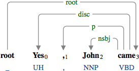
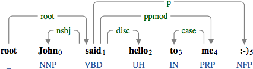
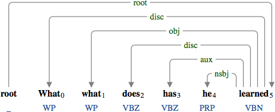
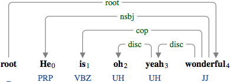
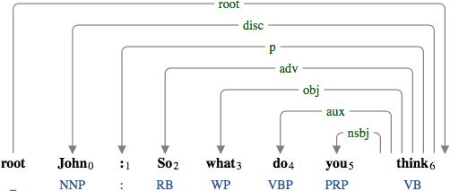

A discourse element (disc) includes an interjection, emoticon, disfluency, speaker information, etc.

The interjection "Yes".

The interjection "hello" and the emoticon ":-)".

"What" is restated and "has" corrects the use of "does" in this discourse.

The interjection "oh yeah" is embedded.

The speaker information "John" is added at the beginning.